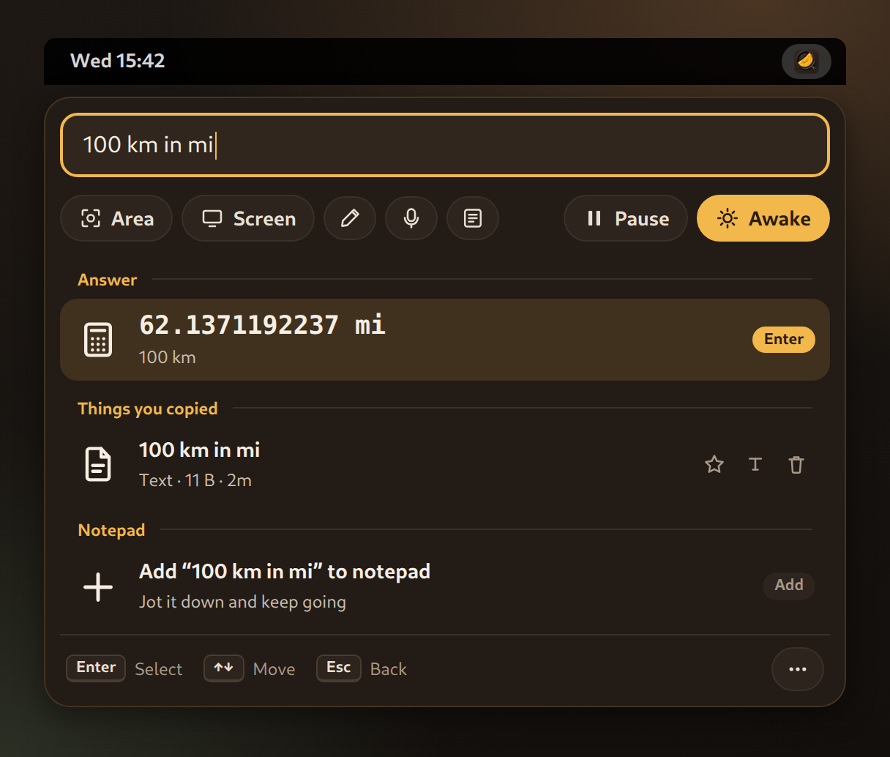
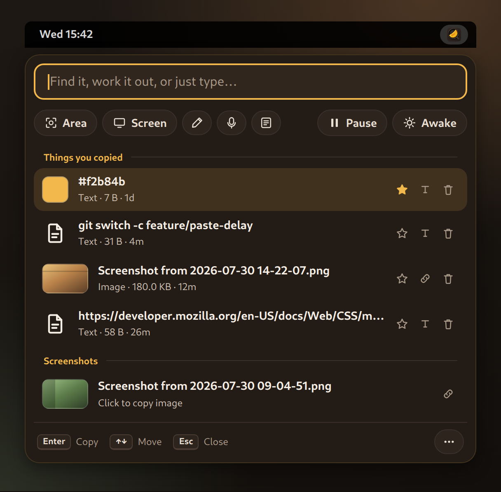

Omelette
Screenshots
Docs
GitHub
Early beta
Install from GitHub
See it in action
GNOME 45–49
MIT licensed
01
Screenshots

The command bar

History and screenshots
Rendered mockups with sample data.